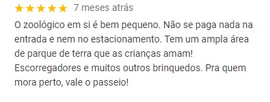
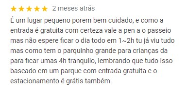
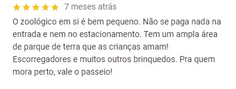
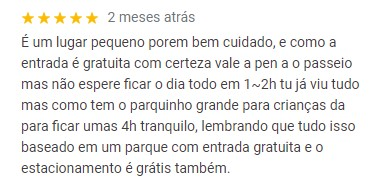

Endereço: Rua Dona Gloria Pagnoncelli 344 Jardim Rosa de França – Guarulhos – São Paulo – Brasil CEP: 07081-120
 



Telefones: Setor técnico: (11) 2452-4523 Setor administrativo: (11) 2455-4999 Gerência: (11) 2452-4558 Educação ambiental: (11) 2455 E-mail de contato: manejo.zooguarulhos@gmail.com